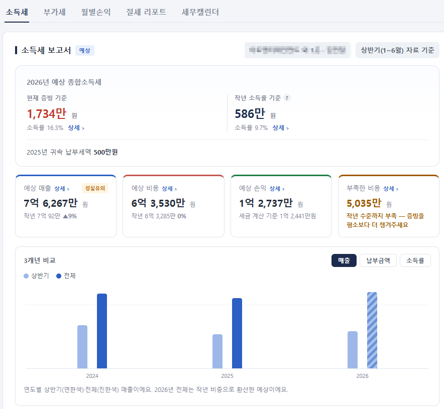

묻기 전에, 먼저.
세금을 신고 직전에야 아는 일이 없도록,
매달 한 장의 리포트로 미리 말씀드립니다.
나이스원세무법인 스마트지점 · 서울 영등포
회사의 이야기를 모으고,
놓치지 않게 짚습니다
한택스가 하는 일은 다섯 가지지만, 결국 하나로 이어집니다.
낼 세금을,
미리 아는 일
월별 손익과 예상 부가세·소득세를 매달 정리해 보내드립니다. 신고 직전에 숫자를 처음 보는 일이 없도록.
"그 예상이 정확한가요?"
지금까지 들어온 증빙 기준과 작년 소득률 기준, 두 가지로 계산해 함께 보여드립니다. 확정 금액이 아니라 준비할 범위를 아는 것이 목적입니다.

실제 리포트 화면입니다 · 고객 정보는 가렸습니다
물어볼 줄 몰랐던 것까지,
먼저 짚어드립니다
절세 방안, 증빙 실수, 세무조사 위험 항목을 프로그램이 먼저 찾아냅니다. 해당되는 회사에만, 시점이 지나기 전에.
"우리 회사에 해당되는 게 있긴 한가요?"
30여 가지를 모두 보내지 않습니다. 사장님 회사 자료에 걸리는 항목만 골라 안내드립니다.
창업감면 기간이 곧 끝납니다끝나는 해부터 세금이 크게 오릅니다
가지급금 인정이자를 넣으실 때입니다정리하지 않으면 대표님 상여로 처리될 수 있습니다
세금계산서 금액이 홈택스와 다릅니다0이 하나 더 붙은 건이 있습니다
건강보험 정산 고지가 나올 시기입니다예상 금액을 미리 계산해 두었습니다
3년 지난 미수금이 남아 있습니다처리 시점을 확인해 보아야 합니다
이 외에도 30여 가지 항목을 매달 점검합니다.
담당자가 바뀌어도,
회사의 이야기는 남습니다
찾아내는 건 프로그램이 하고, 정하는 건 사람이 합니다. 자동 발송 문자 대신 담당자가 회사 사정에 맞게 말씀드립니다.

"숫자를 정리하는 일은 프로그램에게 맡기고,
저희는 사장님과 이야기하는 데
시간을 쓰겠습니다."
한택스 대표 한진식 세무사
세무사 47기 · 리포트 프로그램 직접 개발
담당 세무사 2인
- 간이과세 사업자부터 상장 준비 법인까지 다양한 업종 경험
- 각종 해명자료 제출과 세무조사 대응 경험
- 프로그램을 직접 개발하며 실무에서 필요한 것을 반영
- 직원 상담 방식이 아니라 대표가 직접 사장님과 소통
담당 직원
- 대부분 전산세무 1급 보유 및 교육 수료
- 세무회계경진대회 2회 연속 입상
- 신입 직원은 일정 교육을 마친 뒤 업체를 배정합니다
- 담당자가 부재해도 기록이 남아 업무가 이어집니다